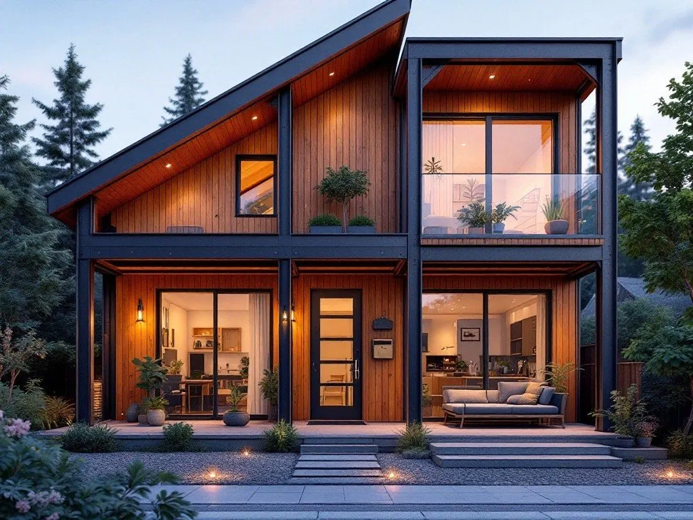
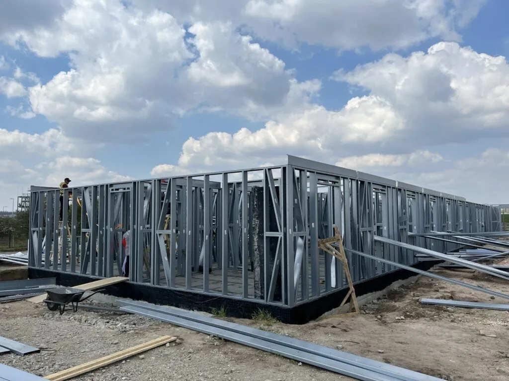
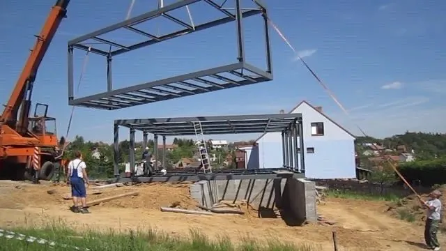
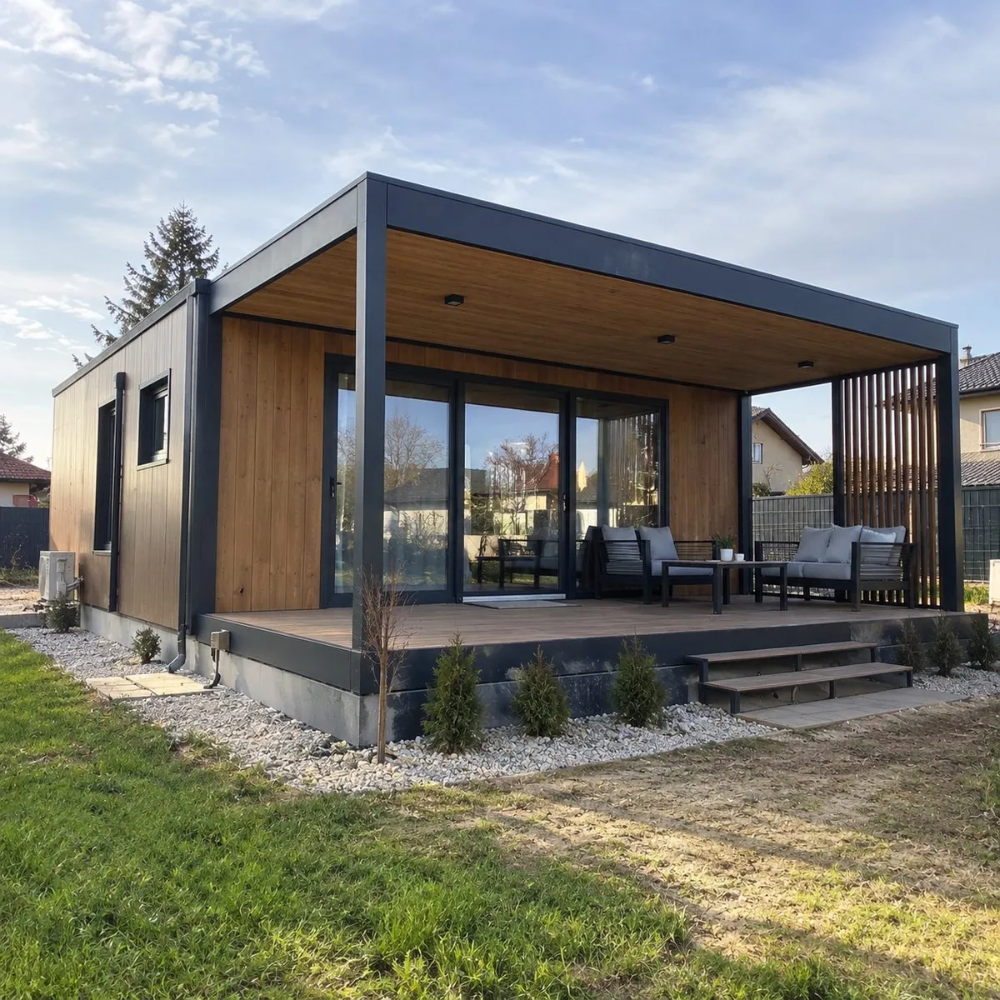

1Írsz nekünk, megbeszéljük az igényeket és az árat.

2Elkészítjük a terveket, majd saját üzemben gyártjuk.

3Kiszállítjuk és felállítjuk a házat a telkeden.

4Átadjuk a kész házat, beköltözhetsz. 12–16 hét alatt.